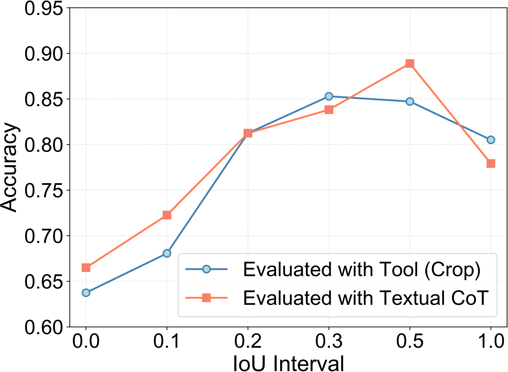
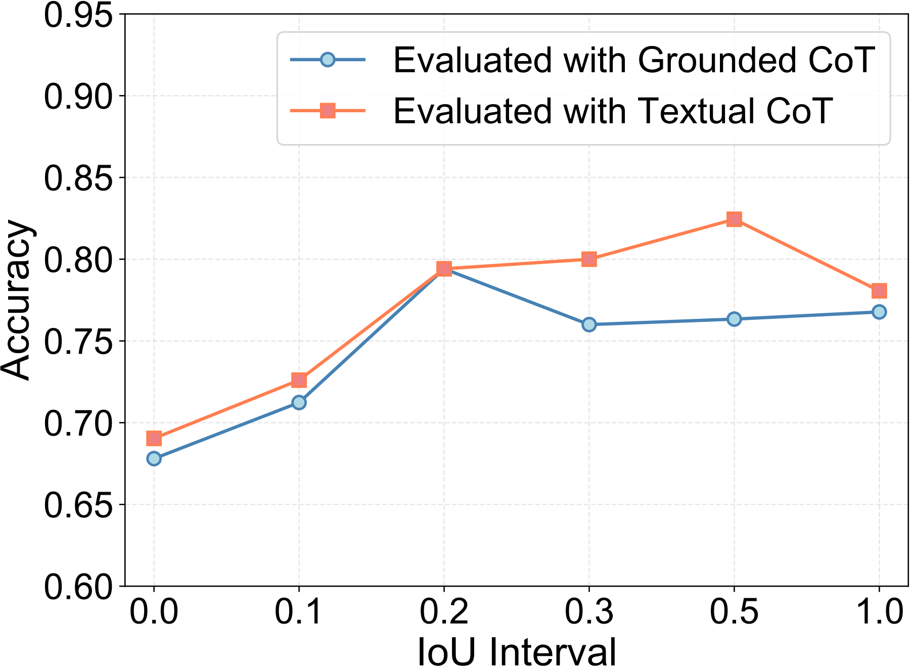
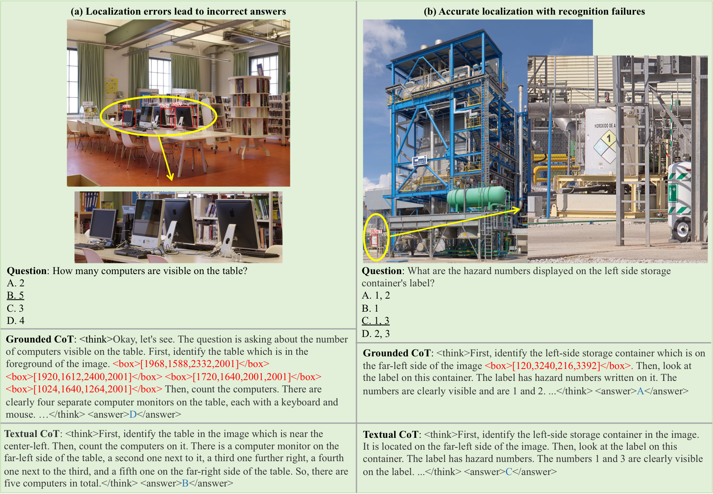
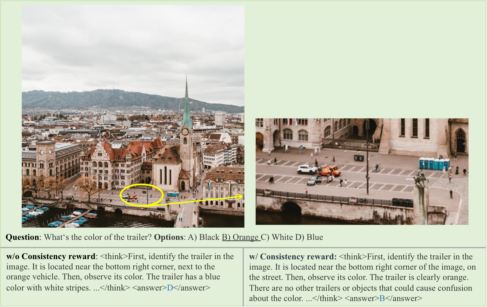

1/3 Paradigm 1 (crop tools): the model “thinks with images”, calling a tool to crop regions.
Abstract
Visually grounded chain-of-thought has emerged as a promising paradigm to enhance fine-grained perception in MLLMs. However, we empirically find that mandating explicit object boxes during inference often degrades performance compared to standard textual CoT. We hypothesize that visual localization capability can be internalized into the textual CoT, and that mandatory explicit grounding introduces unnecessary task interference. We propose iVGR, a reinforcement learning framework that transfers localization capability into the textual reasoning process through a dual-stream training strategy: a textual stream is aligned with a high-quality grounded stream via a novel consistency reward. Extensive experiments show iVGR significantly outperforms existing baselines on fine-grained benchmarks, while remaining compatible with tool-assisted inference workflows.
Textual CoT can outperform Grounded CoT
Off-the-shelf models trained with visually grounded CoT (DeepEyes, TreeVGR) actually perform better when we simply switch to textual CoT at inference, without any retraining.
| Benchmarks | Qwen2.5-VL-7B | DeepEyes-7B | TreeVGR-7B | ||
|---|---|---|---|---|---|
| Textual CoT | Grounded CoT | Textual CoT | Grounded CoT | Textual CoT | |
| V* | 78.5 | 82.7 | 81.7 | 83.8 | 84.3 |
| HRBench4K | 69.0 | 75.1 | 74.9 | 77.1 | 76.9 |
| HRBench8K | 65.1 | 72.6 | 73.1 | 73.1 | 74.7 |
| MME-RealWorld-Lite | 44.5 | 53.2 | 53.5 | 54.9 | 54.7 |
| POPE | 86.3 | 87.7 | 89.2 | 87.3 | 88.4 |
| RealWorldQA | 68.1 | 69.4 | 69.7 | 67.3 | 69.5 |
| CV-Bench-2D | 75.7 | 75.0 | 77.9 | 76.6 | 77.7 |
| CV-Bench-3D | 73.6 | 77.3 | 80.8 | 77.2 | 79.3 |
| Avg. | 70.1 | 74.1 | 75.1 | 74.7 | 75.7 |
When does grounding actually help?
We bucket questions by the IoU of the model's grounded region (HRBench8K) and compare answering with explicit grounding / crops against plain textual CoT.

DeepEyes (crop tool). Textual CoT matches or beats tool-based cropping at low IoU; crops only pull ahead when they are accurate; bad crops inject noise.

TreeVGR (explicit boxes). Textual CoT is on par or better than grounded CoT across every IoU interval.
Dual-Stream RL with a Consistency Reward
For each query, the policy MLLM rolls out a grounded stream (explicit boxes) and a textual stream (plain reasoning). A consistency reward, scored by an LLM judge against the best grounded rollout in a rollout archive, transfers localization into the textual stream, so no coordinates are needed at inference.
1/6 Each query is rolled out by the policy MLLM under both prompts.
Cold-Start, then Reinforcement Learning
A two-stage recipe: cold-start SFT to seed both answer formats, then GRPO over grounding-rich and general-reasoning data.
Seeds both the grounded and textual answer formats before RL.
37K with target boxes from TreeVGR, for grounding:
14K general reasoning:
State of the Art Without Boxes at Inference
| Model | Tool | Fine-grained VQA | General VQA | Avg. | ||||||
|---|---|---|---|---|---|---|---|---|---|---|
| V* | HR4K | HR8K | MME-RW-L | POPE | RWQA | CV-2D | CV-3D | |||
| Proprietary Models | ||||||||||
| Gemini-3.1-Pro-Preview | — | 87.4 | 88.9 | 88.1 | 55.8 | 88.0 | 83.5 | 85.0 | 94.6 | 83.9 |
| GPT-5.4 | — | 88.0 | 87.4 | 80.6 | 63.4 | 87.9 | 83.0 | 82.4 | 91.9 | 83.1 |
| Open-source General Models | ||||||||||
| LLaVA-OneVision-7B | ✗ | 72.8 | 64.6 | 57.9 | 48.2 | 88.3 | 69.5 | 72.9 | 76.9 | 68.9 |
| InternVL3-8B | ✗ | 70.2 | 70.0 | 69.3 | 48.6 | 90.3 | 71.0 | 80.6 | 86.1 | 73.3 |
| Qwen2.5-VL-7B | ✗ | 78.5 | 69.0 | 65.1 | 44.5 | 86.3 | 68.1 | 75.7 | 73.6 | 70.1 |
| Qwen2.5-VL-32B | ✗ | 80.1 | 73.0 | 69.5 | 46.3 | 86.5 | 70.1 | 76.7 | 84.5 | 73.3 |
| Qwen2.5-VL-72B | ✗ | 85.9 | 79.9 | 76.8 | 45.2 | 86.3 | 76.1 | 78.4 | 87.2 | 77.0 |
| Qwen3-VL-4B | ✗ | 78.5 | 77.8 | 71.1 | 48.3 | 89.3 | 71.2 | 78.7 | 91.7 | 75.8 |
| Qwen3-VL-8B | ✗ | 82.7 | 76.5 | 70.4 | 49.0 | 88.1 | 70.5 | 78.6 | 93.5 | 76.2 |
| Qwen3-VL-32B | ✗ | 83.8 | 80.0 | 78.1 | 52.1 | 89.4 | 79.3 | 81.2 | 92.8 | 79.6 |
| Visually Grounded Reasoning Models | ||||||||||
| GRIT-3B | ✗ | 54.5 | 48.4 | 43.5 | 33.8 | 80.8 | 58.0 | 72.5 | 68.2 | 57.5 |
| Pixel-Reasoner-7B | ✓ | — | 72.9 | 66.9 | 49.7 | — | — | — | — | — |
| DeepEyes-7B | ✓ | 82.7 | 75.1 | 72.6 | 53.2 | 87.7 | 69.4 | 75.0 | 77.3 | 74.1 |
| DeepEyesV2-7B | ✓ | 81.8 | 77.9 | 73.8 | — | — | — | — | — | — |
| Mini-o3-7B | ✓ | — | 77.5 | 73.3 | — | — | — | — | — | — |
| Thyme-7B | ✓ | 82.2 | 77.0 | 72.0 | 55.2 | 86.8 | 70.2 | 78.0 | 75.1 | 74.6 |
| TreeVGR-7B | ✗ | 83.8 | 77.1 | 73.1 | 54.9 | 87.3 | 67.3 | 76.6 | 77.2 | 74.7 |
| iVGR-Qwen2.5-VL-7B (ours) | ✗ | 86.4 | 78.3 | 75.5 | 55.6 | 88.9 | 68.6 | 78.4 | 81.1 | 76.6 |
| Δ vs. Qwen2.5-VL-7B | +7.9 | +9.3 | +10.4 | +11.1 | +2.6 | +0.5 | +2.7 | +7.5 | +6.5 | |
| iVGR-Qwen3-VL-8B (ours) | ✗ | 90.1 | 82.0 | 80.1 | 60.7 | 89.4 | 71.0 | 80.8 | 91.0 | 80.6 |
| Δ vs. Qwen3-VL-8B | +7.4 | +5.5 | +9.7 | +11.7 | +1.3 | +0.5 | +2.2 | -2.5 | +4.4 | |
| iVGR-Qwen3-VL-32B (ours) | ✗ | 93.2 | 82.9 | 82.9 | 61.2 | 88.8 | 76.3 | 83.9 | 93.8 | 82.9 |
| Δ vs. Qwen3-VL-32B | +9.4 | +2.9 | +4.8 | +9.1 | -0.6 | -3.0 | +2.7 | +1.0 | +3.3 | |
Chart Understanding & Multidisciplinary Reasoning
| Model | Chart Understanding | Multidisciplinary Reasoning | Avg. | ||||
|---|---|---|---|---|---|---|---|
| ChartQA | AI2D | WeMath | MMStar | MMMU | MMK12 | ||
| Qwen2.5-VL-7B | 86.4 | 83.6 | 35.3 | 63.9 | 54.4 | 53.6 | 62.9 |
| iVGR-Qwen2.5-VL-7B | 88.5 | 85.0 | 41.1 | 66.3 | 55.2 | 56.3 | 65.4 (+2.5) |
| Qwen3-VL-8B | 83.2 | 80.4 | 49.7 | 67.9 | 58.0 | 60.4 | 66.6 |
| iVGR-Qwen3-VL-8B | 87.6 | 85.5 | 55.1 | 69.7 | 59.8 | 61.6 | 69.9 (+3.3) |
| Qwen3-VL-32B | 85.0 | 84.5 | 60.0 | 72.3 | 67.7 | 73.9 | 73.9 |
| iVGR-Qwen3-VL-32B | 90.4 | 88.7 | 61.6 | 75.1 | 67.7 | 75.2 | 76.5 (+2.6) |
Tool-Assisted Test-Time Scaling
Generate a grounded CoT once, crop each predicted box plus a union crop, then answer with textual CoT.
| Model | V* | HR4K | HR8K | Avg. |
|---|---|---|---|---|
| Qwen2.5-VL-7B | 78.5 | 69.0 | 65.1 | 70.9 |
| iVGR-7B | 86.4 | 78.3 | 75.5 | 80.1 |
| iVGR-7B + crops | 89.0 | 79.4 | 76.3 | 81.6 |
| iVGR-7B + union crop | 89.0 | 79.9 | 75.8 | 81.6 |
| iVGR-7B + crops + union | 90.1 | 81.8 | 76.3 | 82.7 |
| Qwen3-VL-8B | 82.7 | 76.5 | 70.4 | 76.5 |
| Qwen3-VL-8B + tool | 90.1 | 82.3 | 78.0 | 83.5 |
| iVGR-8B | 90.1 | 82.0 | 80.1 | 84.1 |
| iVGR-8B + crops | 89.5 | 83.5 | 78.0 | 83.7 |
| iVGR-8B + union crop | 92.7 | 84.5 | 78.8 | 85.3 |
| iVGR-8B + crops + union | 93.2 | 84.3 | 79.3 | 85.6 |
What Actually Drives the Gains?
Average of 5 benchmarks; all RL variants start from the same cold-start. Bars are scaled for contrast; labels are the true scores.
Qualitative Results


Takeaways
BibTeX
@inproceedings{zhang2026ivgr,
title = {iVGR: Internalizing Visually Grounded Reasoning for MLLMs with Reinforcement Learning},
author = {Zhang, Chang-Bin and Zhong, Yujie and Zhang, Qiang and Han, Kai},
booktitle = {International Conference on Machine Learning (ICML)},
year = {2026}
}